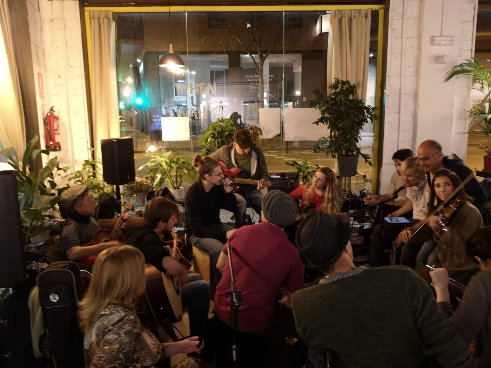

Crowd Participation in Live Improv Event
Listening to music is fun. Making music is more fun. Making music with a big crowd of people? It's the best!

When Covid-19 hit, I was living in Barcelona and had spent most of my free time over the previous 2 years organizing improvisational music jams. The jams were getting bigger and bigger. We even started having spectators and, while it's always nice to know your creations are being appreciated, I wanted each of these spectators to be active participants in the music.
I thought, well, the crowd can help with the rhythm of the music! Queen demonstrated the appeal of mass crowd participation with We Will Rock You. I started handing out maracas, cajóns, little drums, etc. Of course, as the number of percussionists and the complexity of their productions grew, the coherence of the sound became more challenging to maintain.
As a vocalist, I also experienced the challenge of improvising vocals and melodies simultaneously. So I thought, in addition to helping with the rhythm, maybe “the crowd” could also help with lyrics.
At the next jam, I put together a number of index cards and a big pile of pens. I passed them out to the audience and asked them to write random phrases down that the vocalists would then try weaving into a song. This was a big hit!
But - it was challenging to collect all of this material, even with just the ~15 person audience. It certainly wouldn't scale much past that. It was also difficult to piece together all these fragmented ideas into some whole. What if the crowd could work together more directly?
I imagined a system that would structure a real-time writing of a poem/song by a large group.
The experience would be structured into ~1-minute timed rounds in which individuals would enter in ideas for the next line and the group would vote on them. At the end of each round, the line with the most votes would enter the shared poem and it would continue.
Meanwhile, vocalists in the improv session would be singing the lyrics, repeating elements as desired for emphasis (or needed as the lyrics would be brief at first).
While I was thinking about this app, I was in the midst of the customer discovery portion of the curricula for a startup accelerator. This had me focused on determining the customer problem, segment, and path to monetization. It's not clear who would be paying for this experience. Maybe a venue? I would personally pay a couple bucks extra to attend an improv music event (in person or via online stream) in which I could participate as an audience member in writing the lyrics of the performance.
Well, business is boring. Writing a song in real-time with a crowd as it was performed be an improv group would be awesome. Singing a song as it was being written in real-time by the audience - also awesome.